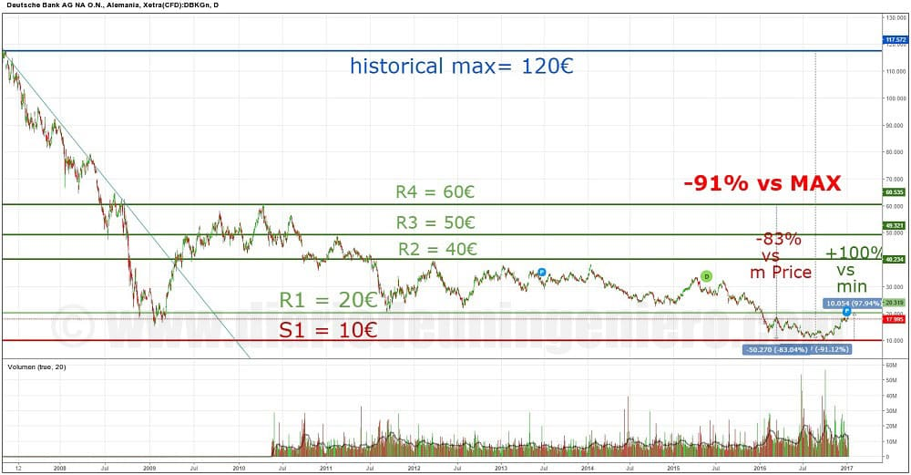
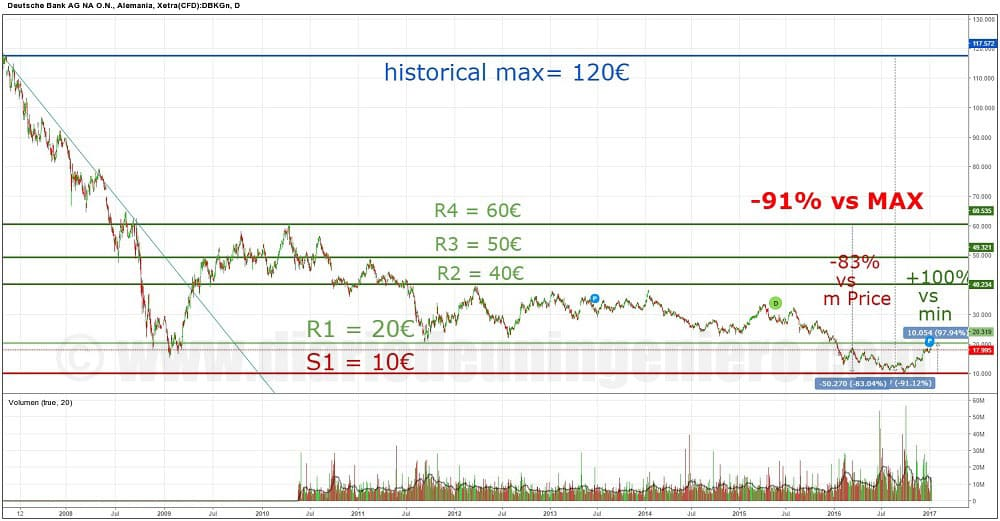

Llego noviembre y con ello los problemas bancarios.
Es bien sabido que Deutsche Bank está quebrado debido a sus operaciones en el mercado subyacente, en un año ha perdido cerca del 90% de su valor.
Aun así, nadie dice que está quebrado pero es porque en caso de necesitar liquidez siempre estará la gran Alemania para hacer el trabajo sucio.
La más reciente polémica era por una multa de USA de unos 14k millones de dólares por su papel en la crisis en las hipotecas basura.
En el siguiente gráfico podemos ver las proporciones de la caída del Deutsche Bank, que van hasta un 90% desde máximos y un 80% desde su valor normal de los 60€.
En 2008 varios de los bancos americanos que quebraron y desataron la crisis financiera no llegaron al 90% y sin embargo se habló de bancarota.
En este caso debido a los intereses europeos se ha tratado de rebajar el mensaje y jamás se ha hablado de quiebra del deutsche Bank.
Merkel tampoco ha querido hablar de rescate bancario pero en este banco alguien ha tenido que hacer las cosas muy mal y seguro que se han tomado medidas internas.
A parte de las hipotecas basura el banco ha tomado riesgos innecesarios apalancándose más de lo debido en mercados subyacentes entrando en una crisis sistémica.
Muchas de las órdenes del Deutsche han sido replicadas por varios bancos y fondos europeos lo que ha hecho aumentar la desconfianza al sector bancario.
Esta crisis no va a ser ni mucho menos pasajera y aunque el valor real recupere un valor algo aceptable de los 30€ va a estar a la sombra de la enorme deuda que tiene que pagar y los numerosos pleitos por resolver.
Sin embargo sabiendo quien protege a este banco, tanto Alemania, motor y director de la UE y el BCE creo que no pasará nada grave en estos próximos tres años y más cuando suban tipos de interés que le den oxígeno al banco.
 

En el caso italiano tenemos al Monte Di Paschi que necesita un rescate que supera los 20.000 millones de euros.
La caída del banco italiano en términos absolutos ha sido muy parecido al alemán con la salvedad de que llevaba cayendo de años atrás.
En este caso la caída de este año ha sido de un 90% desde máximos, 75% desde su nivel medio. A mediados de año se mantuvo en una estela lateral entre 45€ y 70€ hasta que se llegó a vislumbrar el desastre en verano.
Actualmente la cotización se encuentra en su nivel histórico más bajo, valiendo la acción unos 15€ con todas las papeletas de bajar más.
Hasta que llegue el rescate la presión bajista se mantendrá y creo que podría llegar a los 10€. En el siguiente gráfico podemos ver la evolución del valor este año.


Al igual que Bankia tras el rescate tendrá que hacerlo muy bien y tardará como tres años en recuperarse.
Este rescate será ejercido por el gobierno italiano.
Tras el anuncio del rescate del Di Paschi y la rebaja de la multa por parte de USA en el caso del Deutsche Bank ambos bancos han experimentado un gran rebote en su valor en bolsa.
Sin embargo la sobra del problema bancario persiste en Europa y dará que hablar.
Estos casos son muy parecidos al rescate de varias entidades españolas hace 2 años que tanto criticaron desde el exterior.
Bankia tiene excelentes gestores ahora mismo y el euro que vale su cotización no representa su potencial.
Estos bancos tienen una base de clientes muy fiel y segura por lo que a la hora de recuperarse están mucho más respaldados. Además de que la subida de tipos le vendrá muy bien.
Además ha tenido mucha más repercusión, llegando el gobierno ha realizar un referéndum para que el gobierno tenga mucho mayor control y papel en las decisiones financieras.
Con esto se demuestra que todos los países de la zona euro tienen los mismos problemas pero siempre es mejor tirar el balón al bando contrario.
© 2016 - All Rights Reserved - Diseñada por Sergio López Martínez
![[Valid RSS]](https://www.feedvalidator.org/images/valid-rss-rogers.png "Validate my RSS feed")